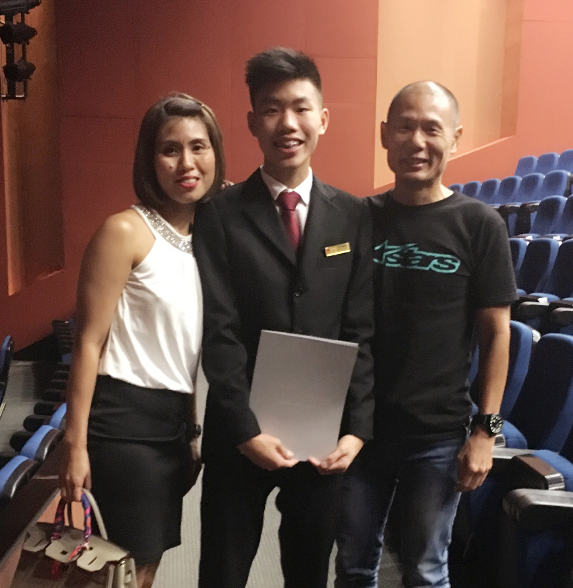

Dance
From 2013-2016 i was selected to be a dancer for my secondary school, Kent Ridge Secondary School, where i performed at various school events and community events.
I partcipated in many events such as the Singapore Youth Festival (2013) & Singapore Youth Festival (2015) where i achieved Distinction in 2013 and Accomplishment in 2015.
In 2015, i was given the role as the President of Dance where i led my school to perform at various dance competitions and school events.
Role
President
Major Accolades
Singapore Youth Festival (2013) Distinction
Singapore Youth Festival (2013) Accomplishment
Student Council
During my time in the Institute of Technical Education (ITE) I was selected student council member where i was given the task to make the school a better place. I was given an Executive Committee position called Chairman in Co-Curricular Activivites & Enrichment where in my department i was tasked to make sure we reach out to students to join the student council.
As a Student Council chairman i was able to support my fellow student members by endulging damn in various community service events. In my departnent, along with my deputy chairmans, we were able to also able to carry out cca events such as the CCA booth we during CCA Roadshow.
Role
Studen Council Chariman in CCA & Enrichment Department

Singapore Police Force
During my time in National Service i was posted to the Police Force where i became Protective Security Command (ProCom) Ops Room Operator where i am in charge of protecting my fellow police officers who are patrolling on the ground at a command post
Rank
Special Constable/Corporal (SC/CPL)
Vocation
Ops Room Operator